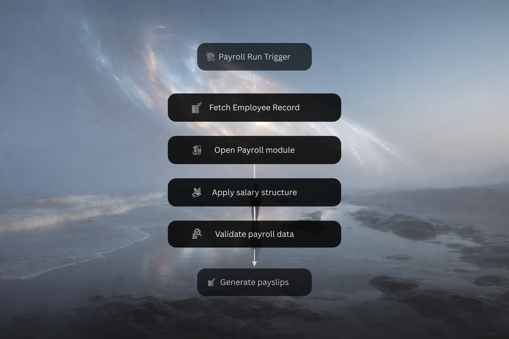
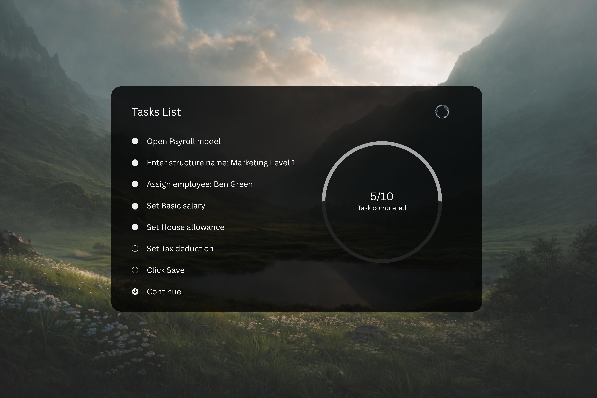
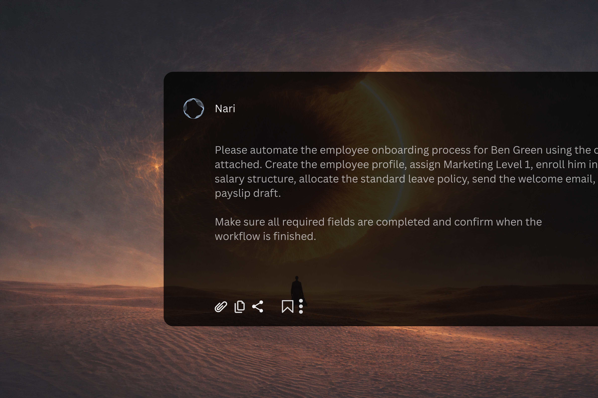

Time Reclaimed
Capture a workflow once, then generate live guidance instantly so teams move faster without writing and maintaining static docs by hand.
Aevra uses AI to learn how your team works, then turns each process into live in-product guidance and automation.

Capture a workflow once, then generate live guidance instantly so teams move faster without writing and maintaining static docs by hand.

Replay every process directly inside the browser with contextual guidance layered on top of the actual workflow, so work stays clear and easy to follow.

Turn repeated browser work into automation that runs for your team, eliminates manual steps, and keeps people focused on decisions instead of routine execution.
Turn real tasks into guided onboarding flows so every teammate can learn the process directly in the browser, without shadowing and without static docs.
Book a demoGive operators step-by-step guidance inside every workflow so execution stays consistent, updates roll out instantly, and critical processes are easier to follow.
Book a demoHelp support and operations teams navigate escalations, account changes, and exception flows without breaking focus or searching through documentation.
Book a demoCapture a process once, turn repetitive steps into automation, and let teams intervene only where approvals, exceptions, and decisions actually matter.
Book a demo